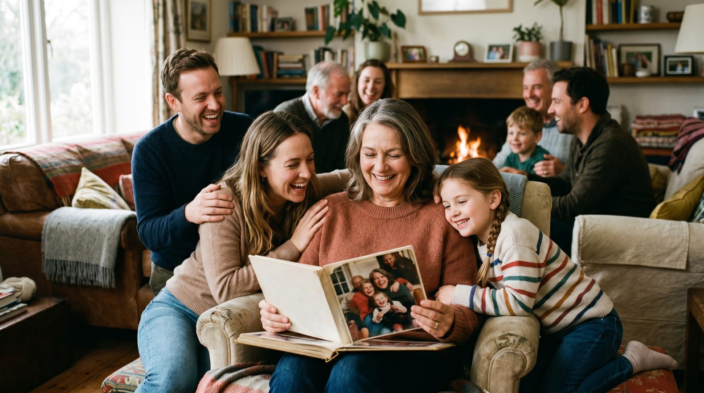

Подарите маме на 8 марта незабываемый подарок — оживите её любимые фотографии в короткие видео. Это не просто подарок, а память, которую она сможет пересматривать снова и снова.
Создание видео из фотографий — это отличный способ сделать подарок на 8 марта более личным и запоминающимся. Вы можете собрать все важные моменты жизни вашей мамы в одном коротком ролике. Это может быть свадебное фото, моменты с детьми или даже старые снимки её родителей. Такое видео станет настоящим сюрпризом и тронет до глубины души.
Кроме того, это возможность сохранить семейный архив. Оживлённые фотографии позволяют взглянуть на прошлое с новой стороны, добавляя динамику и эмоции. Это не только подарок, но и вклад в семейные традиции, который будет цениться годами.
Выбор фотографий для видео — это важный шаг, от которого зависит итоговый результат. Рекомендуется выбирать снимки, где лицо человека показано анфас и хорошо видно. Избегайте фотографий с низким разрешением и размытых изображений, так как это может негативно сказаться на качестве видео.
Если у вас есть старые или повреждённые фотографии, не стоит отчаиваться. Сервисы, такие как VideoAI, способны восстановить и улучшить такие изображения. Главное, чтобы на фото было одно лицо, так как нейросеть лучше работает с одиночными портретами.
Создание видео через VideoAI — это простой и быстрый процесс, который не требует регистрации. Достаточно зайти на сайт botisk.ru и загрузить выбранные фотографии. Система сама подскажет, какие движения и анимации можно добавить.
Через 60 секунд вы получите готовое видео, которое можно скачать и подарить маме. Первое видео бесплатно, что позволяет протестировать сервис без лишних расходов. Оплата за последующие ролики составляет от 290 рублей за 10 видео.
| Способ | Время | Цена | Результат |
|---|---|---|---|
| VideoAI | ~60 секунд | Первое бесплатно, от 290р за 10 | Высокое качество, быстро |
| Студия | 1-2 недели | от 5000р | Профессионально, долго |
| Фрилансер | 3-7 дней | от 1500р | Разное качество |
| Зарубежные сервисы | ~30 минут | от $15 | Валюта, сложная оплата |
Для более подробной информации о процессе оживления фото вы можете посмотреть другие наши статьи: как оживить старое фото или оживить фото дедушки.
Без регистрации. Первое видео — бесплатно. Загрузите снимок — получите живое видео за 60 секунд.
Создать видео из фото →Просто зайдите на сайт botisk.ru и выберите функцию загрузки. Нет необходимости регистрироваться.
Первое видео бесплатно. Далее стоимость начинается от 290 рублей за 10 видео.
Лучше всего подходят фотографии с чётким изображением лица, с хорошим разрешением и освещением.